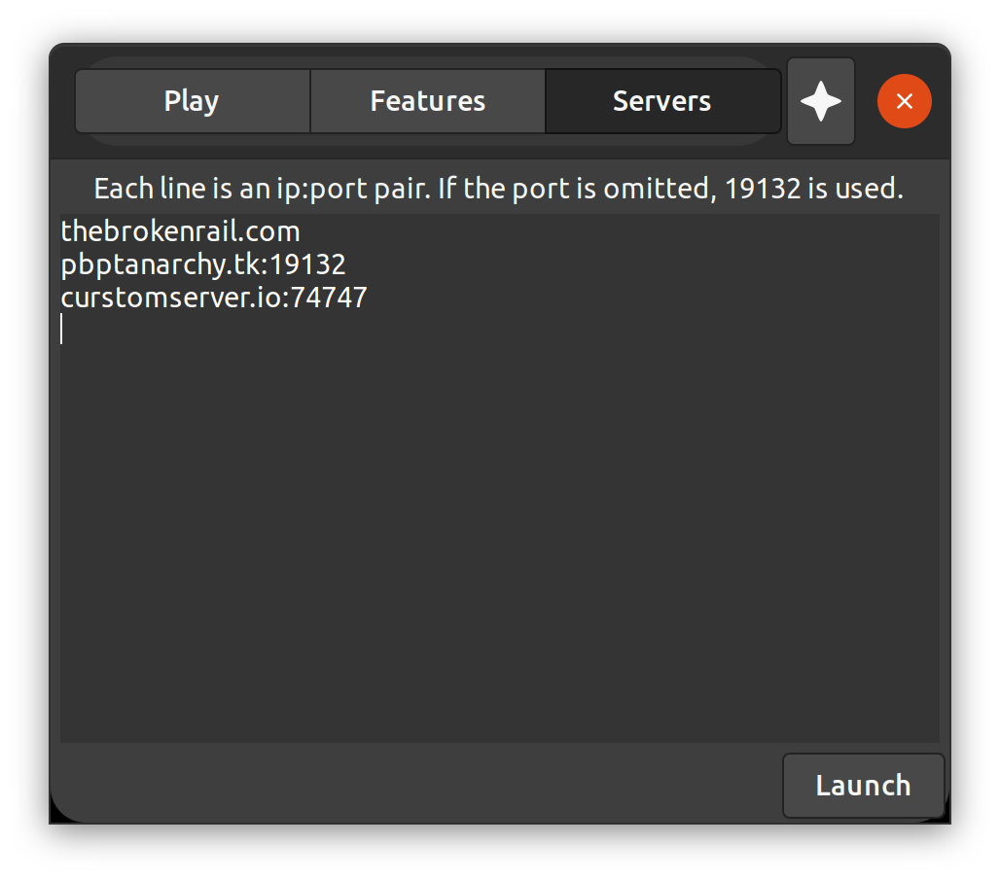

First of all, you will need to get the IP and the port of the server. We host a curated list of good servers here. The "manual" method requires Python 3.7 or superior. While the Launcher requires Python 3.7.
Manually
You will need to download the proxy. Then navigate to the folder where it is and use it as following:
python3 ./proxy src_addr [src_port [dst_port]]Remember to replace src_addr with the server IP. If the server uses a port different from the default, replace src_port with the server port. And if you want to use a specific port, replace dst_port with the port you want. If you don't need any of these configurations, leave these in blank, like:
python3 ./proxy.py ip.ip.ip.ipWhere ip.ip.ip.ip is the server IP.
Using the Launcher
You will need to download and install the launcher, if you need help, read the documentation or read the more detailed HowTo. There is a "Servers" tab in the launcher, it's a GUI (Graphical User Interface) for the proxy, you simply need to put the server IP in "Server address" and the port in "Server port", like in the following screenshot, and then click in the "Add server" button:
